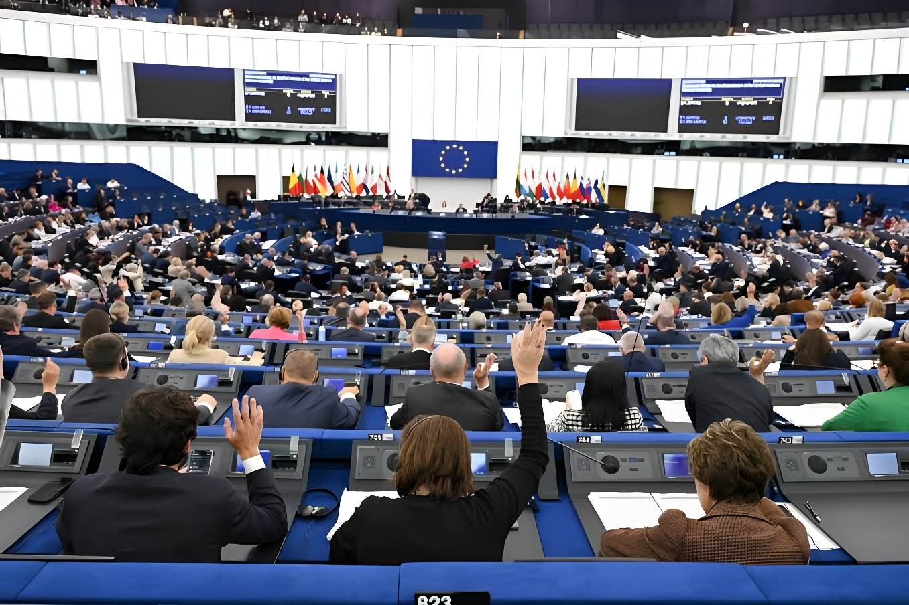

Le 17 juin 2026, le Parlement européen a adopté à Strasbourg le règlement sur les retours, qui autorise les États membres à créer des « hubs de retour » hors de l'UE pour y envoyer les personnes déboutées du droit d'asile. À l'annonce du résultat, des eurodéputés d'extrême droite ont scandé « Renvoyez-les ! », sous les huées de la gauche. Ce vote, obtenu grâce à une alliance entre le PPE, les conservateurs et les groupes d'extrême droite, scelle cinq jours après l'entrée en vigueur du Pacte sur la migration et l'asile un nouveau durcissement de la politique migratoire européenne.
Réunis en séance plénière à Strasbourg, les eurodéputés ont approuvé le règlement sur les retours par 418 voix pour, 218 contre et 30 abstentions. Ce texte, qui valide l'accord politique trouvé le 1er juin 2026 entre le Parlement et le Conseil de l'UE, doit encore être formellement adopté par ce dernier avant son entrée en application. Porté par la Commission européenne depuis mars 2025, il remplace la directive « retour » de 2008 et vise à rendre les procédures d'éloignement des ressortissants de pays tiers en situation irrégulière plus rapides et mieux coordonnées entre les vingt-sept États membres.
Le constat de départ est connu de Bruxelles depuis plusieurs années : en 2025, environ 492 000 obligations de quitter le territoire ont été délivrées dans l'Union, mais seules 135 460 personnes ont effectivement quitté le sol européen, soit un taux d'exécution de 27,5 %. La Commission, qui évoquait un taux d'environ 20 % lors de sa proposition initiale, considère ce niveau insuffisant au regard du nombre de décisions prononcées chaque année.
La disposition qui concentre l'essentiel des critiques est la création de centres de rétention situés hors du territoire de l'Union, où les États membres pourront transférer des personnes faisant l'objet d'une décision de retour définitive, sur la base d'un accord bilatéral avec un pays tiers. Ces pays ne seraient pas nécessairement le pays d'origine ou de résidence habituelle de la personne concernée. Plusieurs pistes de partenaires ont circulé sans confirmation officielle, parmi lesquelles le Rwanda, l'Ouganda ou l'Ouzbékistan.
La Commission européenne précise que ces accords ne pourront être conclus qu'avec des pays respectant les droits humains, le droit international et le principe de non-refoulement. Les ONG, dont Amnesty International, soulignent toutefois que l'obligation de mettre en place un mécanisme de surveillance des droits fondamentaux dans ces centres a été retirée du texte final lors des négociations. Les mineurs non accompagnés sont exclus du dispositif, mais les familles avec enfants peuvent, elles, y être transférées.
« Cette loi va permettre des expulsions massives. »
— Amnesty International, au lendemain du vote, 17 juin 2026À l'annonce des résultats, une partie des eurodéputés d'extrême droite a scandé en anglais « Send them back » — « Renvoyez-les ! » —, provoquant des réactions immédiates à gauche de l'hémicycle, où des élus ont répondu « Honte à vous ! ». L'eurodéputée écologiste française Mélissa Camara a dénoncé un texte dont la seule boussole serait, selon elle, la xénophobie, tandis que le négociateur du PPE, François-Xavier Bellamy, a salué une étape qu'il a qualifiée d'historique pour l'Europe.
Le vote du 17 juin a été acquis grâce à une coalition réunissant le Parti populaire européen (PPE), les Conservateurs et réformistes européens (ECR) et les deux groupes d'extrême droite du Parlement, les Patriotes pour l'Europe et l'Europe des nations souveraines. Cette alliance, déjà à l'œuvre lors du vote en commission des Libertés civiles le 9 mars 2026, marque selon plusieurs observateurs la fin du « cordon sanitaire » qui excluait traditionnellement l'extrême droite des grandes décisions législatives du Parlement européen.
Les Socialistes et démocrates (S&D), les Verts/ALE et la Gauche ont voté contre, dénonçant une dérive qu'ils rapprochent des politiques migratoires de l'administration américaine. Au centre, le groupe Renew Europe est resté divisé : plusieurs de ses élus, dont le Belge Yvan Verougstraete, ont voté contre le texte en regrettant l'absence d'exclusion des familles avec enfants du dispositif des hubs, sans parvenir à l'imposer dans le compromis final.
Ce règlement vient compléter le Pacte européen sur la migration et l'asile, un ensemble de dix textes — neuf règlements et une directive — adopté en 2024 et entré en application le 12 juin 2026 dans l'ensemble des vingt-sept États membres. Ce pacte a déjà introduit un filtrage renforcé aux frontières extérieures, une liste commune de « pays tiers sûrs » vers lesquels les demandes d'asile peuvent être jugées irrecevables, ainsi qu'un mécanisme de solidarité entre États autour de l'accueil des demandeurs.
En France, plusieurs dispositions du Pacte ne sont pas applicables en l'état, notamment le concept de pays tiers sûr, jugé contraire à des exigences constitutionnelles relatives à l'examen individuel des demandes d'asile. Le gouvernement a dû adapter son droit national par ordonnances, un processus que plusieurs associations, dont Forum réfugiés, jugent encore inachevé à la date d'entrée en vigueur du texte.
La Commission européenne présente sa proposition de système commun de retour, incluant le concept de « hubs de retour ».
La commission des Libertés civiles (LIBE) adopte sa position de négociation grâce à l'alliance PPE-droites souverainistes.
Entrée en vigueur du Pacte européen sur la migration et l'asile dans les vingt-sept États membres.
Le Parlement européen adopte le règlement sur les retours par 418 voix pour. Des élus d'extrême droite scandent « Renvoyez-les ! ».
Adoption formelle par le Conseil de l'UE, puis publication au Journal officiel ; les dispositions sur les hubs s'appliqueraient immédiatement, les autres douze mois plus tard.
Au-delà du texte lui-même, ce vote illustre une recomposition des équilibres au Parlement européen, où le PPE peut désormais faire adopter des textes majeurs sans l'appui des socialistes ou des libéraux, en s'associant ponctuellement à l'extrême droite. La même dynamique avait déjà été observée quelques mois plus tôt sur des dossiers économiques et environnementaux.
Sur le fond, la portée réelle des « hubs de retour » reste incertaine : aucun accord avec un pays tiers n'a été signé à ce jour, et des juristes rappellent que la jurisprudence européenne en matière de droits fondamentaux pourrait limiter leur mise en œuvre. Le débat n'oppose donc pas seulement deux visions de la dignité humaine et de l'efficacité administrative — il pose la question de savoir si l'Europe peut durcir son discours sur l'immigration sans, dans les faits, transformer en profondeur sa capacité à exécuter ses propres décisions.